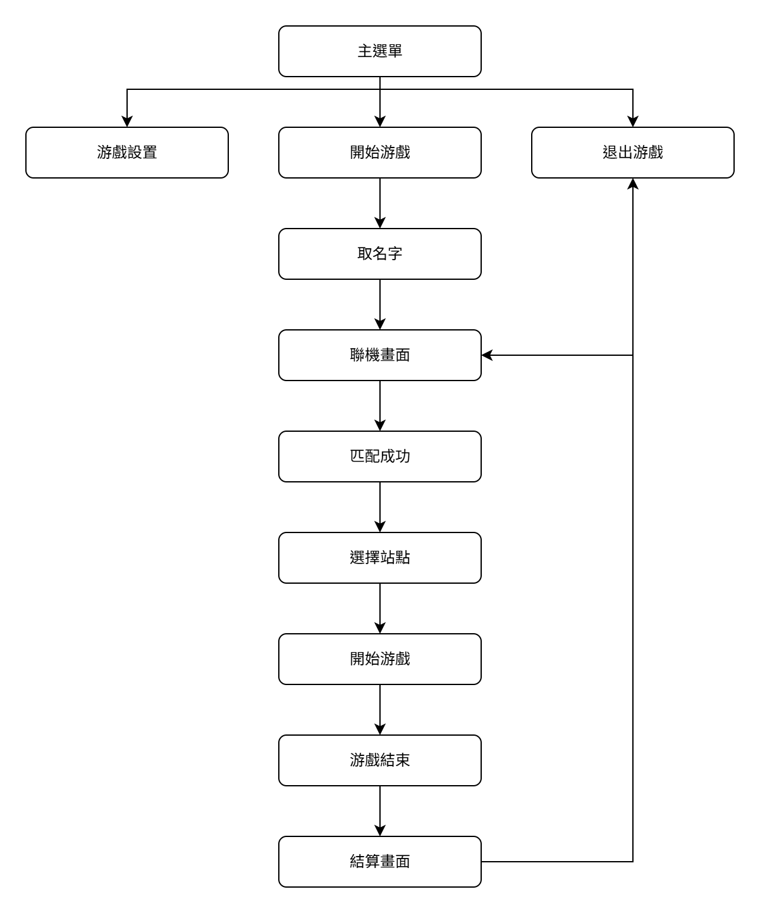
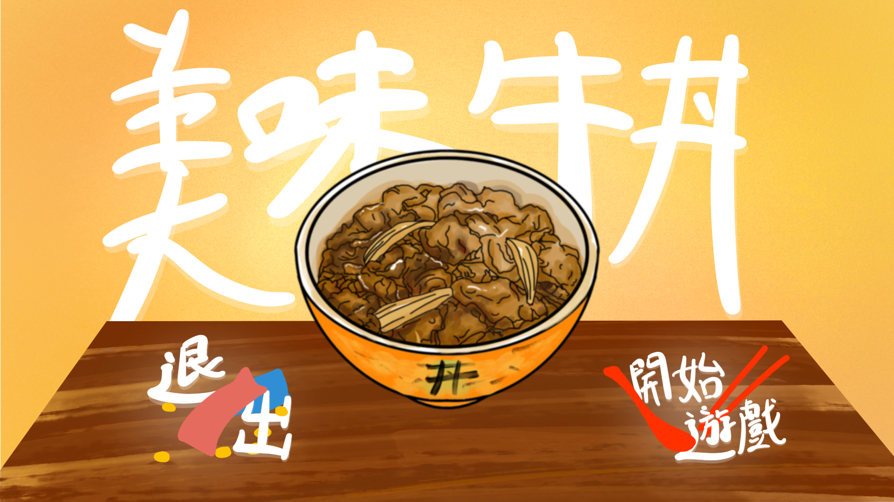
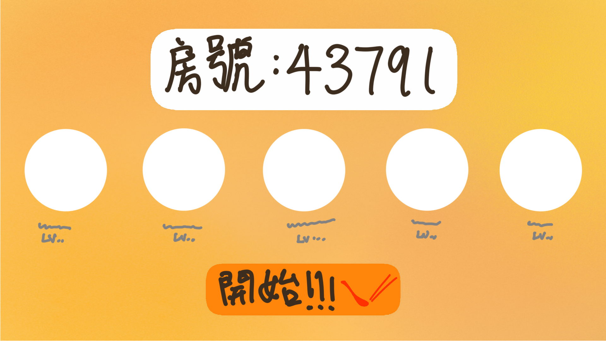
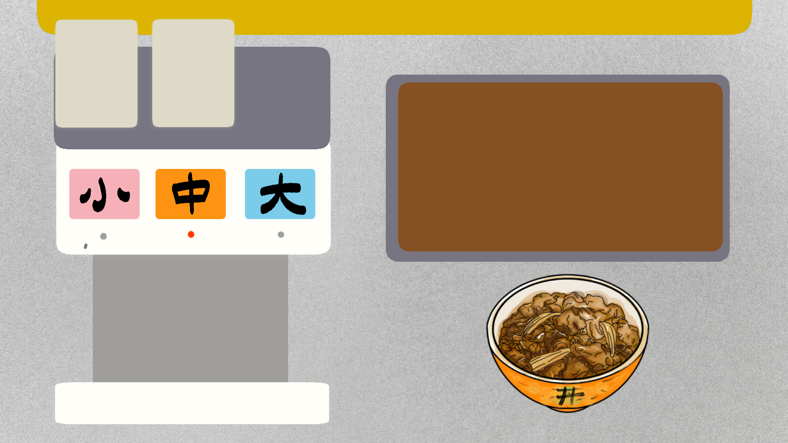
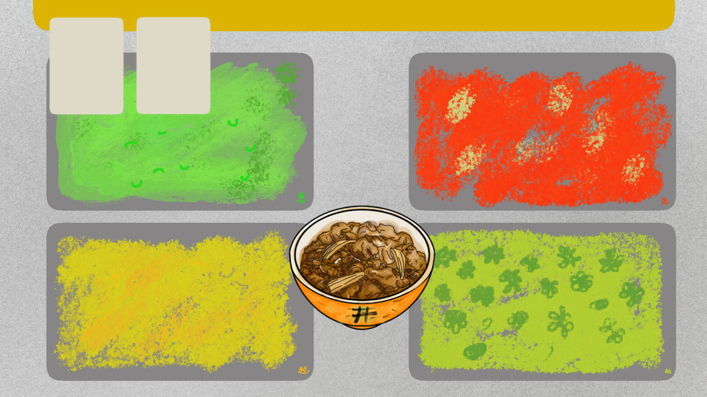
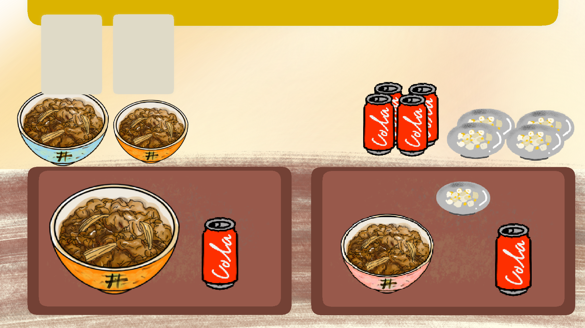
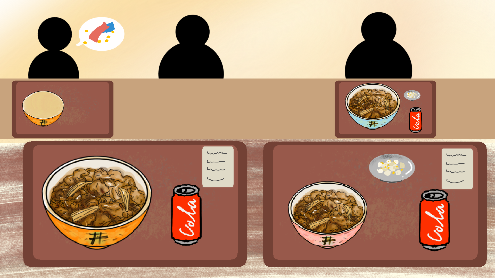
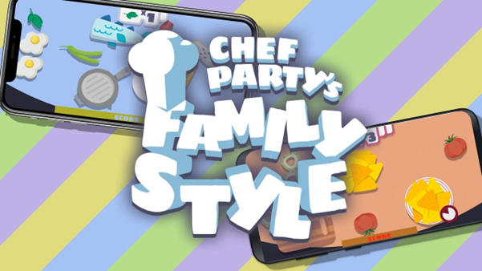
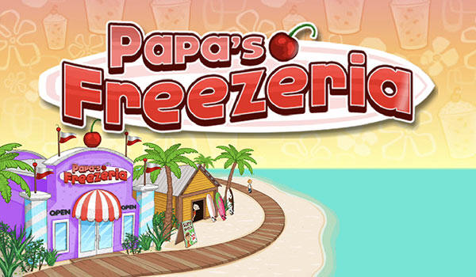
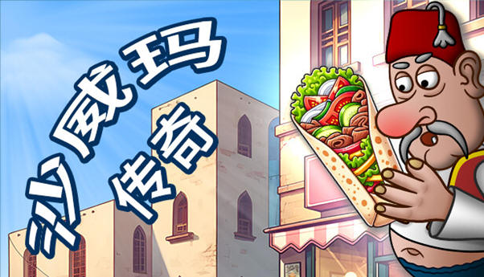

美味牛丼
| 下載ppt | 下載企劃書 | 回首頁 |
目錄
柒、封面
從自己的生活做取材，因為自己在這家店打工，然後有想要報復自己公司的想法，所以就有這個幼稚的想法
「連鎖丼飯店」的資深員工因對總公司新上任CEO所下達的的規章制度等有所不滿
因此決定出來自己單幹 將自己在所學的經營知識帶到自己開的新品牌
· 已手機為主要游戲器材
· 多人游戲
· 餐廳經營爲主題
· 風格為擬物風格爲主
一. 操作方式
以點擊及滑動來操作
二. 玩法介紹
游戲需要集齊五位玩家聯機游玩，五名玩家對應五個不同的站點，從客人下單的那一刻，每位玩家游戲畫面上方有一個賬單欄位，接著由製作牛丼的玩家開啓第一棒，接著將牛丼傳送給第二個玩家來加工，再傳給第三個玩家，第四個玩家提供第三個玩家需要的套餐飲料等，再有第三個玩家整合之後傳給下單的第五個玩家來將餐點送給客人。
三. 流程圖
|
 |
|
| 表1：整體游戲流程 | 表2：牛丼製作流程 |
| 畫面 | 説明 |
|
 圖1-1：主選單 |
打開游戲的第一個畫面，右下角為“開始游戲”按鈕，左下角為“退出游戲”按鈕。點擊“開始游戲”將引導玩家到下一個游戲畫面，點擊“退出游戲”則會關閉游戲。 |
|
圖1-2：取名字 |
玩家將從上一個游戲畫面引導到此畫面，玩家需要在開始游戲前取個名字，玩家輸入玩名字之後在鍵盤點擊“ENTER”即可進入下一個畫面。 |
|
 圖1-3：聯機畫面 |
玩家進入到此玩家后即可與好友分享房號邀請好友加入游戲房間，凑夠人數之後即可點擊“開始”按鈕。玩家們將隨機被分配到不同游戲站點。 |
|
 圖1-4：製作牛丼 |
此畫面為加工牛丼畫面，玩家需根據單子需求添加牛丼配料。配料選擇有葱花（左上），起司（左下），泡菜（右上），秋葵（右下）。點擊相應配料即可添加至牛丼上方。完成後即可滑動牛丼至下一個游戲畫面。 |
|
 圖1-5：加工牛丼 |
此畫面為加工牛丼畫面，玩家需根據單子需求添加牛丼配料。配料選擇有葱花（左上），起司（左下），泡菜（右上），秋葵（右下）。點擊相應配料即可添加至牛丼上方。完成後即可滑動牛丼至下一個游戲畫面。 |
|
 圖1-7：組合套餐 |
此畫面為組合套餐畫面，玩家需要根據單子需求將主餐與副餐組合在一起。玩家需將左上製作完成的牛丼與右上角的飲料與配菜組合到下方的托盤中，將單子從“單子區”滑動下來並貼在托盤上表示完成組合。完成後即可長按托盤並滑動至下一個玩家。 |
|
 圖1-8：送餐給客人 |
此畫面為客席區，畫面上半部為客人的位置，下半部為組合好的餐點。玩家需點擊客人旁的圖標按鈕對客人做點餐或結賬動作。此外也需要將下半部組合好的餐點送至對應的客人。 |
|
 |
||
|
圖2-1：Good
Pizza, Great Pizza |
圖2-2：Family
Style |
圖2-3：Overcooked |
 |
 |
|
|
圖2-4：Papa’s
Freezeria |
圖2-5：LINE I Love Coffee |
圖2-6：沙威瑪傳奇 |